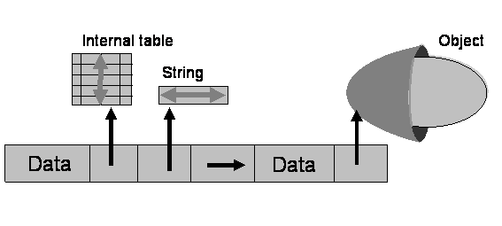

AS ABAP Release 754, ©Copyright 2019 SAP SE. All rights reserved.
ABAP Keyword Documentation → ABAP − Reference → Processing Internal Data →Structures
Structures are data objects (comprised of components of any data type) that are saved one after the other in the memory. The data type of a structure is a structured type or a structure defined in ABAP Dictionary.
In a program, a structured type or structure is created using the additions BEGIN OF ... END OF of the statements TYPES, DATA, and so on. Types can be created dynamically using the RTTC methods. In ABAP Dictionary, structures appear as standalone data types, as types of database tables, of classic views or of CDS entities.
Programming Guidelines
Types of Structures
Structures are named as follows (depending on the type of the component):
A structure that contains static or dynamic components is (formally) a static or dynamic data object, respectively.
The following figure illustrates a deep structure.

Note
The term "nested structure" must not be confused with the term "deep structure". A nested structure is flat if it only contains flat components and subcomponents. A nested structure is deep when it has at least one deep component or subcomponent.
Example
Nested structure. The substructure is created using a reference to the dictionary structure SCARR for the second component. The components are accessed using the structure component selector (-).
DATA:
BEGIN OF struct,
name TYPE c LENGTH 10 VALUE 'SCARR',
scarr TYPE scarr,
END OF struct.
SELECT SINGLE *
FROM scarr
WHERE carrid = 'LH'
INTO CORRESPONDING FIELDS OF @struct-scarr.
cl_demo_output=>new(
)->write_data( struct-name
)->write_data( struct-scarr-carrid
)->write_data( struct-scarr-carrname
)->display( ).
Example
Deep structure. The following structure contains deep components only.
DATA:
BEGIN OF struct,
text TYPE string,
hex TYPE xstring,
tab TYPE STANDARD TABLE OF i WITH EMPTY KEY,
dref TYPE REF TO i,
iref TYPE REF TO if_demo_output,
END OF struct.
Using Structures
Structures are addressed either fully or by component, at appropriate operand positions. The structure component selector (-) is used for the latter case. In the case of data reference variables that are typed as a structure, the components of the structure to which the data reference variable points are addressed using the object component selector (->).
Special conversion and comparison rules apply to assignments that involve structures. Flat character-like structures differ in that they can be used like character-like data objects in many operand positions and included in the generic ABAP type clike. They can be specified in almost all operand positions where elementary character-like data objects are possible. The ABAP runtime environment then interprets the structure as an elementary field of the type c in the length of the structure. An exception to this are operand positions of string expressions and string functions.
For the assignment of structure components, there is a special statement MOVE-CORRESPONDING, a constructor operator CORRESPONDING, and a system class CL_ABAP_CORRESPONDING. The INTO clause of ABAP SQL also has an addition CORRESPONDING. The statement ASSIGN has a special variant COMPONENT OF STRUCTURE for dynamic access to structure components.
Example
Inline declaration of a structure wa in a SELECT statement with reference to the database table SCARR in ABAP Dictionary. The components of the structure are accessed using the structure component selector (-). .
SELECT carrid, carrname
FROM scarr
INTO @DATA(wa).
cl_demo_output=>write( |{ wa-carrid WIDTH = 5
}{ wa-carrname }| ).
ENDSELECT.
cl_demo_output=>display( ).
Example
Creates a structure as an anonymous data object with the type of the database table SCARR in ABAP Dictionary pointed to by the data reference variable dref. Used as the target area of a SELECT statement by applying the dereferencing operator (->*). The components of the structure are accessed using the object component selector (->).
DATA(dref) = NEW scarr( ).
SELECT *
FROM scarr
INTO @dref->*.
cl_demo_output=>write( |{ dref->carrid WIDTH = 5
}{ dref->carrname }| ).
ENDSELECT.
cl_demo_output=>display( ).
Example
The following example demonstrates that a flat structure with character-like-only components can behave like a structure and like a character-like data object.
DATA:
BEGIN OF struct,
col1 TYPE c LENGTH 5 VALUE '12345',
col2 TYPE c LENGTH 5 VALUE 'abcde',
END OF struct.
cl_demo_output=>new(
)->write_data( struct
)->write_data( struct-col1
)->write_data( struct-col2
)->write_data( CONV string( struct )
)->display( ).
Using Deep Structures
The data content of deep structures is not saved completely within the memory bounds of the structure and the deep components are just references to the actual data instead. This means that some general restrictions apply when using deep structures (unlike flat structures):
Note
These restrictions are particularly important if single components in existing flat character-like structures are converted to strings, which makes the entire structure deep.
Example
The following two deep structures are not compatible and cannot be converted to each other.
Using Deep ABAP Dictionary Structures
The same restrictions apply to deep structures defined in ABAP Dictionary as to deep structures defined in ABAP programs. Further restrictions apply only when the following language elements forbidden in classes (in which only flat ABAP Dictionary structures can be specified) are used:
Boxed Components
The substructures of nested structures and structured components of classes or interfaces can be declared as boxed components.